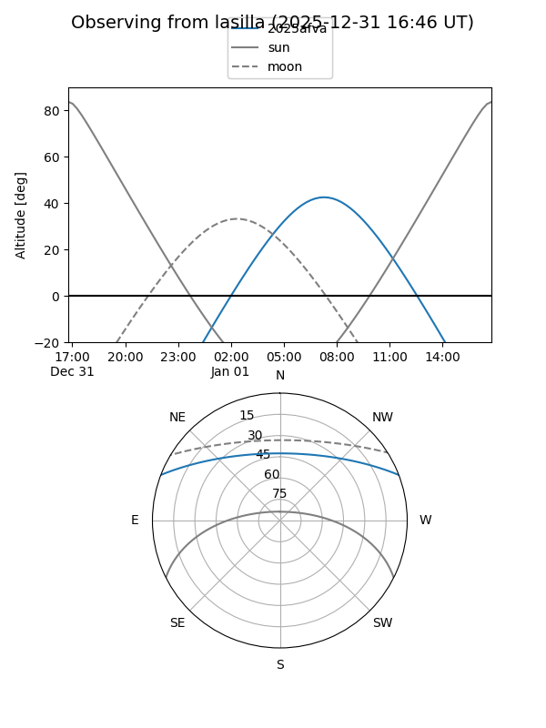
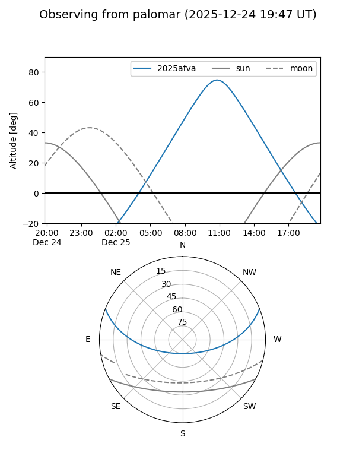
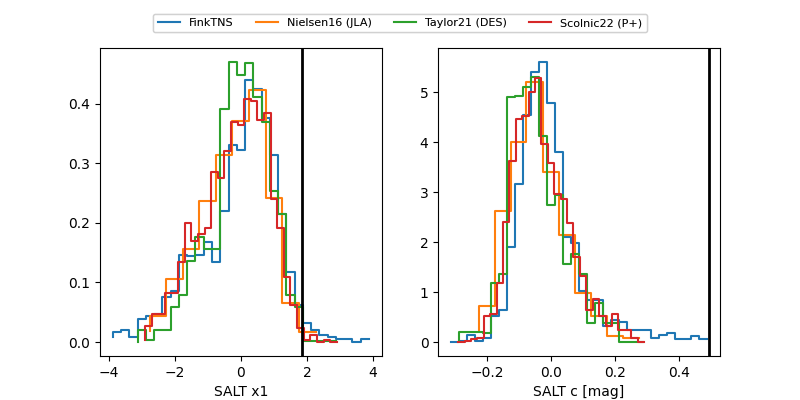

2025afva
Target 2025afva at 2025-12-29 10:01
Aliases and brokers:
FINK: fink-portal.org/ZTF25acfwfen
Lasair: lasair-ztf.lsst.ac.uk/objects/ZTF25acfwfen
ALeRCE: alerce.online/object/ZTF25acfwfen
TNS: wis-tns.org/object/2025afva
YSE: ziggy.ucolick.org/yse/transient_detail/2025afva
alt names
ZTF25acfwfen (ztf,fink_ztf)
2025afva (tns,yse)
ATLAS25pln (atlas)
Coordinates:
equatorial (ra, dec) = 139.0143,+18.29442
equatorial (HMS+DMS) = 09:16:03.43,+18:17:39.90
galactic (l, b) = (211.1427,+39.91570)
Flags:
Photometry:
last atlaso=18.07, ztfg=19.63, ztfr=18.06
5 atlaso, 5 ztfg, 5 ztfr detections
Lightcurve

Visibility


Additional plots
